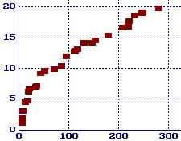

The Gaps Between Primes
By Chris Caldwell
Contents:
- Introduction and definition of g(n)
- lim inf g(n) = 1(?) and lim sup g(n) = infinity
- A Table and Graph of Record Gaps
- Bounds on g(p)
- What about g(p)/log(p), g(p)/(log p)2 ?
1. Introduction and definition of g(n)
It is frequently asked how large the gap between consecutive primes may get. Before we answer this, let us first carefully define gap (there are two different standard definitions). For every prime p let g(p) be the number of composites between p and the next prime. So letting pn be the nth prime we have:
pn+1 = pn + g(pn) + 1.
That is, g(pn) is the (size of) gap between pn and pn+1.
By the prime number theorem we know there are approximately n/log(n) (natural log) primes less than n, so the "average gap" between primes less than n is log(n). But how wide of range can these gaps have? We will discuss several aspects of this question below.
2. lim inf g(n) = 1(?) and lim sup g(n) = infinity
First note that g(p) = 1 for twin primes p, p+2. So from the twin prime conjecture we have the conjecture (almost certainly true) that g(p) = 1 infinitely often (or equivalently lim inf g(n) = 1).
Second note that g(p) can be arbitrarily large. To see this let n be any integer greater than one and consider the following sequence of consecutive integers:
n!+2, n!+3, n!+4, n!+5, ..., n!+n
Notice that 2 divides the first, 3 divides the second, ..., n divides the n-1st, showing all of these numbers are composite! So if p is the largest prime less than n!+2 we have g(p) > n-1. Obviously there should be smaller numbers which produce the same gaps. For example, there is a gap of 777 composites after the prime 42842283925351--this is the least prime which produces a gap of 777 and it is far smaller than 778!+2 (which has 1914 digits). (Rather than use n!, one can also use the smaller n primorial: n#).
In the last paragraph we showed that lim sup g(n) = infinity, but we expect much more since the "average gap" is about log(n). In 1931 Westzynthius [Westzynthius31] proved that
lim sup g(n)/log pn = infinity
which means that for every ß > 0 there are infinitely many primes p with g(p) > ß log p. Before we say more we should look at some numerical evidence.
3. A Table and Graph of Record Gaps
In the following table we list the maximal gaps through 381. These are the first occurrences of gaps of at least of this length. For example, there is a gap of 879 composites after the prime 277900416100927. This is the first occurrence of a gap of this length, but still is not a maximal gap since 905 composites follow the smaller prime 218209405436543 [Nicely99].
| Gap | After | Gap | After | Gap | After | Gap | After |
|---|---|---|---|---|---|---|---|
| 0 | 2 | 33 | 1327 | 117 | 1349533 | 247 | 191912783 |
| 1 | 3 | 35 | 9551 | 131 | 1357201 | 249 | 387096133 |
| 3 | 7 | 43 | 15683 | 147 | 2010733 | 281 | 436273009 |
| 5 | 23 | 51 | 19609 | 153 | 4652353 | 287 | 1294268491 |
| 7 | 89 | 71 | 31397 | 179 | 17051707 | 291 | 1453168141 |
| 13 | 113 | 85 | 155921 | 209 | 20831323 | 319 | 2300942549 |
| 17 | 523 | 95 | 360653 | 219 | 47326693 | 335 | 3842610773 |
| 19 | 887 | 111 | 370261 | 221 | 122164747 | 353 | 4302407359 |
| 21 | 1129 | 113 | 492113 | 233 | 189695659 | 381 | 10726904659 |
For each non-negative integer g let p(g) be the smallest prime that is followed by at least g composites. This table tells us p(148) = p(149) = ... = p(153) = 4652353. See [Nicely99] and [NN99] for information on searches which extended this table to maximal gaps through 1132. We give a more complete list of maximal gaps on a separate page. See also Jens Kruse Andersen's page of top twenty gaps.
 For the values in the table above we have graphed ln p(g) (the natural log) versus g in the graph on the right. Perhaps you can begin to see why Shanks conjectured in 1964 that
ln p(g) ~ sqrt(g),
and Weintraub estimated in 1991 that
ln p(g) ~ sqrt(1.165746g).
4. Bounds on g(p)
It is possible to put an upper limit on g(p) given p. By the prime number theoremwe can show that for every real number e > 0 and there is some integer m0 such that there is always a prime p satisfyingm < p < (1 + e)m (for every m > m0)
This shows that g(p) < ep for all p > max(m0,1+1/e). Or more succinctly, g(pn) < epn for n > n0. Here are several specific pairs e, n0 quoted from [Ribenboim95p252-253]:
- g(pn) < (1/5)pn for n > 9 (Nagura 1952)
- g(pn) < (1/13)pn for n > 118 (Rohrbach & Weis 1964)
- g(pn) < (1/16597)pn for n > 2010760 (Schoenfeld 1976)
In 1937 Ingham refined pioneering work of Hoheisel to show that g(p) is bounded by a constant times p5/8+eps (for every eps>0). Many folk have improved on the 5/8, the most recent record that I know of is 0.535 due to R. Baker and G. Harman [BH96] (but surely this has been improved on by now).
5. What about g(p)/log p, g(p)/(log p)2 ?
Again, the prime number theorem proves that the average value of g(p)/log p is one, but what do we know of the sequence {g(p)/logp}? Ricci [Ricci56] showed that set of limit points of this set has positive Lebesgue measure, but so far the only proven limit point is infinity (mentioned above) [see EE85, p22].
Various upper bounds for lim inf g(p)/logp have been found, including 0.248 [Maier85] (of course, both the twin prime conjecture and the prime k-tuple conjectures require that the limit inferior be zero). In a related conjecture Cramér [Cramér36] conjectured that
lim sup g(p)/(log p)2 = 1.
Granville altered Cramer's conjecture, suggesting that it underestimates the size of the gaps. Granville conjectures that for any constant c less than Euler's gamma:
g(p) > 2 e-c log2 p
infinitely often. Here the constant comes from analogy with Merten's theorem.
Can this be proven? Not yet, but Cramér did show that if the Riemann Hypothesis holds, then we would have the far weaker result:
g(p) < k p1/2 log p.
There is a lot more to say concerning conjectures and theorems on both the size of these gaps and how often a given gap occurs... Why not just spend an evening with section 4.2 ("The nth Prime and Gaps") of [Ribenboim95].